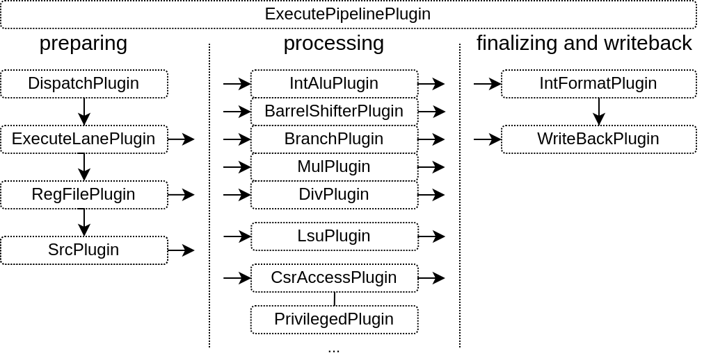

Plugins
The execute pipeline is composed by many plugins, here is a diagram to illustrate the flow of instructions through them :
Infrastructures
Many of the plugins operating in the execute stage aren't directly implementing instructions, but instead provide some infrastructure which will be used to do so.
ExecutePipelinePlugin
Provide the pipeline framework for all the execute related hardware with the following specificities :
For flow control, the lanes can only freeze the whole pipeline
The pipeline do not collapse bubbles (a bubble is a stage with no instruction at a given cycle)
ExecuteLanePlugin
Implement an execution lane in the ExecutePipelinePlugin :
Read the register files
Implement the register files write to read bypasses networks
Provide a pipelining API built on the top ExecutePipelinePlugin. That API allows to operate in the given lane.
RegFilePlugin
Implement one register file, with the possibility to create new read / write port on demands.
SrcPlugin
Provide some integer values to instruction which can mux between RS1/RS2 and multiple RISC-V instruction's literal values :
SRC1 can be : RS1 or U literal
SRC2 can be : RS1 or PC or I or S literal
It also provide the hardware for a :
SRC1 + SRC2
SRC1 - SRC2
SRC1 < SRC2
RsUnsignedPlugin
Used by mul/div in order to get an unsigned RS1/RS2 value early in the pipeline
IntFormatPlugin
Allows plugins to sign extends their result values using a shared hardware. It uses the WriteBackPlugin to write its results back to the register file.
WriteBackPlugin
Used by plugins to inject results into the pipeline, which will then be written into the register file.
LearnPlugin
Will collect all interface which provide jump/branch learning interfaces to aggregate them into a single one, which will then be used by branch prediction plugins to learn.
Instructions
Some plugins just focus on implementing the CPU instructions.
IntAluPlugin
Implement the arithmetic, binary and literal instructions (ADD, SUB, AND, OR, LUI, ...)
BarrelShifterPlugin
Implement the shift instructions in a non-blocking way (no iterations). Fast but "heavy".
BranchPlugin
Will :
Implement branch/jump instruction
Correct the PC / History in the case the branch prediction was wrong
Provide a learn interface to the LearnPlugin
MulPlugin
Implement multiplication operation using partial multiplications and then summing their result
Done over multiple stage
Can optionally extends the last stage for one cycle in order to buffer the MULH bits
DivPlugin
Implement the division/remain instructions
Can be configured in Radix 2/4 (1/ bits per cycle are solved)
When it start, it scan for the numerator leading bits for 0, and can skip dividing them (can skip blocks of XLEN/4)
LsuCachelessPlugin
Implement load / store through a cacheless memory bus
Will fork the cmd as soon as fork stage is valid (with no flush)
Handle backpressure by using a little fifo on the response data
More information in the Memory (LSU) chapter
LsuPlugin
Implement load / store through a l1 cache.
More information in the Memory (LSU) chapter
CsrAccessPlugin
Implement the CSR read and write instruction in the execute pipeline
Provide an API for other plugins to specify the mapping between the CSR registers and the CSR instruction
See the Privileges chapter for more informations.
EnvPlugin
See the Privileges chapter for more informations.
Implement a few instructions as MRET, SRET, ECALL, EBREAK, FENCE.I, WFI by producing hardware traps